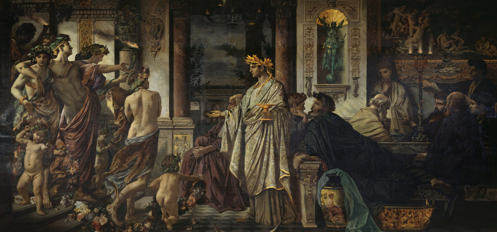
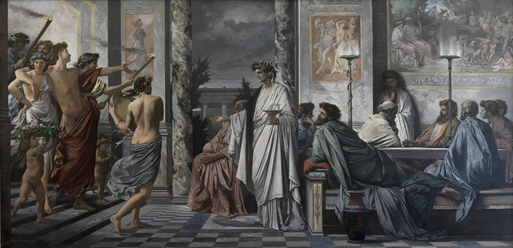

Plato’s Symposium - Part 1
An introduction
Plato’s Symposium (or, correctly, Symposion) is one of humanity’s immortal texts on love. Seven friends gather at a party one night in ancient Athens and discuss the nature of love. Plato’s thoughts in the Symposion have influenced our views on love right up to the present.
You can find all our articles on love here.
If you like reading about philosophy, here's a free, weekly newsletter with articles just like this one: Send it to me!
Why read the Symposion at all?
When you see someone talking about the Symposion today, you might ask yourself: Why on Earth should I care about a 2400-year-old piece of text? What could Plato possibly say about love that we don’t already know? We are so inundated with talk of love, from TV, movies, social media and dating apps. What could old Plato possibly teach us?
A lot, as it turns out. To begin with, the Symposion is what we would today call an LGBT story. Its background understanding is that love is at its best between men, ideally an older man and a boy, a teacher and his student, a master and his apprentice. But love between women is also explicitly acknowledged in the text, and it is only with regret that Plato admits that some men actually do love women. Reassuringly, it is only the meaner sort who do:
Love we see in the meaner sort of men; who, in the first place, love women as well as boys… [181b]
But this is only a funny aside. Another important contribution of the Symposion to the intellectual history of the West is that it established firmly the Christian attitude of man’s love towards God. The Jewish God is a hands-on master, watching over His chosen flock, making sure that they keep all the commandments, traditions, dietary and dress rules just as they should. The Christian God is a much more Platonic being: far away, He is not to be reasoned with. His ideal realm is somewhere else, unreachable for living human beings, and only accessible to the dead who, if deemed worthy, will live a second, eternal life in the shine of God’s perfection. This is, as we will soon see, a concept that comes directly from Plato’s theory of love, as it is presented in the Symposion. Religious fasting, the spiritual exercises of monks, the love of man towards God – all these are directly influenced and shaped by what Plato tells us in his story of a drunk night, in which a bunch of friends talk about love.

Appraisal and bestowal in love
And even the modern philosophy of love is still heavily indebted to Plato. We distinguish today between two fundamental kinds of love: Love as appraisal and love as bestowal.
Appraisal means that I justify my love by pointing out the qualities of the beloved that make me love them: I love you because of the way you look, because of your golden hair, because of your black eyes, because of your humour or your daring, courageous personality.
But not all love is like that. Sometimes, we bestow our love on others without any good, rational reason. Typically, parents wouldn’t say that they love their children because of their kids’ golden hair or their humour. They might recognise or even admire these qualities, but they would still love their children even if they were dumb, with dirty hair and muddy eyes. The love of a mother towards her child does not depend on any particular quality of that child (except, trivially, the quality of being that mother’s child).

The Symposium, by Anselm Feuerbach, 1869 version. Public domain.
Another example of bestowal is when we give money to a charity. Charitable giving is a form of love, surely, but we don’t give only to charities that exclusively support beautifully-looking beggars or earthquake victims with splendid golden hair. We don’t appraise the humour or the eye colour of the beggar on the street before we give them money. In charitable action, we bestow our love unconditionally on the recipient.
There has always been a discussion in the philosophy of love about whether love is based on appraisal or bestowal or both – and which kinds of love fall into the one or the other category, and whether the one or the other is the “truest” or best kind of love. And all this begins with Plato and his understanding of Eros, which he introduces in the Symposion.
Finally, we still talk about “Platonic love” today, although the words have changed their meaning over the past two and a half millennia. As Plato saw it, love was a kind of ladder that led from the enjoyment of bodies to the clear vision of the perfect world of mathematics and philosophy. Not quite what we would call “Platonic love” today. Still, the words still exist and signify something, and most people can associate a meaning with them. There are only a handful of such ancient philosophy words that are still in use: a Stoic character; an Epicurean delight; Socratic questioning. Nobody talks of the Senecean brevity of life, Aristotelian friendships or Zenoan puzzlement. Most ancient philosophies have slowly been forgotten over time, but Plato and his vision of love are still with us today.
So let’s see what it’s all about.
What were Symposia?
The word “symposion” comes from “syn-,” meaning “with,” “together” (synapse, symphony) and “pino,” the verb “to drink.” So it literally just means a drinking party.
At symposia, only men were normally drinking together, singing songs, telling jokes, and having a good time. They reclined on long benches and ate and drank wine. The host controlled the degree of drunkenness, by instructing the servants to dilute the wine with some amount of water. If the host thought that the party lacked spirit, he could reduce the amount of water used and dial up the wine. If it seemed in danger of getting out of control, he could serve more watery wine until the participants calmed down. Often a symposion among learned men would have a topic to discuss and to provide some structure to the evening. One by one, the men would take turns to contribute to the discussion, each one adding their own points and insights.
Women were only present as dancers or musicians, not as participants. But in this particular symposion, it turns out that the wisest character, the one who even teaches Socrates about love, is a woman: the seer Diotima.

Love is a very complex phenomenon that encompasses sex, friendship, self-love and selflessness, as well as God’s love in many religious traditions.
Is Plato’s Symposion historical?
The particular symposion took place around 35 years before it was re-told (or imagined) by Plato. We know that the people in Plato’s work did exist, and, all of them being well-known citizens of Athens, they likely would have met at symposia and known each other. Still, it’s unlikely that the story Plato tells us reflects the real speeches given at a particular party. For one, it all fits too well together. Each speech contributes a unique point to the debate that builds right upon the previous speech. And all of them lead, in the end, towards the resolution, Plato’s own theory of love.
The people in the story were still known to Plato’s readers, but all of them, except for Aristophanes, were already dead. Aristophanes might have been in the last year of his life when Plato wrote the Symposion. To get a feeling for what reading this text might have felt like to an ancient Athenian, imagine a book about a meeting of famous people in the mid-1980s: politicians of that time, generals, an actor or two, a writer, and a philosopher; now all dead or very old. This is how the Athenians of Plato’s time would have read the Symposion, recognising the names in the text as famous people of the past.
To us, the names mean little. We might recognise one or two, but others we don’t know about. Thankfully, Plato introduces the characters of his story, so we can still work out who they were. The occupations of the participants are carefully chosen to illustrate particular points in the debate: the doctor’s contribution is informed by science, the poet’s by poetry, the lawyer’s by a legalese attention to detail.
This is what makes the Symposion such a pleasure to read: its wonderful construction as a text, in which nothing is left to chance. Every word, every image are chosen to make a precise point – but the reader doesn’t know this until the very end. Only then we suddenly see the plan of the whole come into view, and we understand how every mention of something, from the beginning throughout the whole text, was foreshadowing a particular point in the resolution. Much of the fun of reading the text comes from reading it a second time, when one can resolve all these forward references and see how everything fits together in the end.
Your ad-blocker ate the form? Just click here to subscribe!
The Symposion’s characters
The Symposion’s main part consists of seven speeches, in which seven different speakers talk about what love is. Each speaker has their own background and their own opinions.
But the story is told through multiple layers of “recollections,” probably because Plato didn’t want to be accused of distorting reality, or putting the wrong words into the mouths of his characters (who, remember, had been real people). So Plato framed the Symposion as the recollection of someone called Apollodoros, of what was told to him long ago by one Aristodemos, who himself was reconstructing the events from memory. These people are entirely irrelevant to the story itself. They don’t participate in the symposion, they don’t give any speeches, and they are only there to frame the tale.
Here is a short overview of the important people at the party:
- Agathon (about 31 years old at the Symposion): A poet who wrote tragedies (none survived).
- Alcibiades (about 35 years old): A famous aristocrat and playboy, later politician and general of the Athenian fleet. He was known for switching sides as it served him, only looking at his own benefit. Socrates saved his life in battle on two different occasions, and Alcibiades always looked up at Socrates as his teacher and lover.
- Aristophanes (about 34 years old): One of the “big four” writers in classical Athens (the others are Aeschylus, Euripides and Sophocles). Aristophanes wrote comedies, some of which made fun of Socrates.
- Eryximachus (about 30 years old): A physician, friend of the others.
- Pausanias: Has a relationship with Agathon. Legal expert. There are many people in ancient history with that name.
- Phaedrus (about 28 years old): Friend of Eryximachus, also appears in other works of Plato. Educated young man who likes literature.
- Socrates (about 54 years. old): one of the most famous philosophers of ancient times. He didn’t write anything down himself, so his thoughts are only known through the works of others (mainly Plato).
Instead of trying to remember all the names, it’s probably easier (and works just as well) to remember the speakers through their occupations and their contribution: the doctor, the lawyer, the poet and so on. One could even give them new names, those of famous lawyers or doctors of the recent past, and remember them in this way. This will work just as well. None of what is being said really depends on the particular name of the speaker in order to make sense, with the exception of Socrates, who has to be understood to be the wisest of men, admired and respected by all the others.

The Symposium, by Anselm Feuerbach, 1874 version. Public domain.
Structure of the Symposion
These seven people decide to have a party in which they’ll give speeches about love. Each person talks from their own perspective. Some are more romantic, some funny, some more oriented towards medicine or the natural sciences. Through these seven people, Plato manages to talk about love from many different perspectives before finally giving the word to Socrates.
Socrates provides the crowning contribution of the evening. Interestingly, he attributes his ideas to a woman, Diotima, an unusual move for the time, but one that actually emphasises Plato’s point about love, as we will see later on.
When you read the text, ignore the references to any mythological and literary figures. Back then, they would have been known to everyone, like when we today talk of Superman or any Disney movie character. But these background references are not necessary in order to understand the main points of the debate.
Also, while you read the text, remember that this is a game to pass the time. The speakers don’t want to speak directly and make their points. It’s not, on the surface, a philosophical argument (although, in reality, it is). The speakers want to take their time, show their wit, and entertain their audience. You’ll have to look over all that to find the core message of each speaker.
This is why it’s helpful to read the Symposion with a guide that highlights the important bits in the text (like this series of posts). In the end, you will need to read and understand only about 10-20% of the text in order to get Plato’s message. The rest is filler and jest that you can safely skip.
If you like reading about philosophy, here's a free, weekly newsletter with articles just like this one: Send it to me!
Over the course of the coming weeks and months, we will talk more about the different faces and theories of love, so if you’re not yet subscribed, you may want to do that now and make sure that you don’t miss a post:
You can find all our articles on love here.
◊ ◊ ◊

Andreas Matthias on Daily Philosophy: